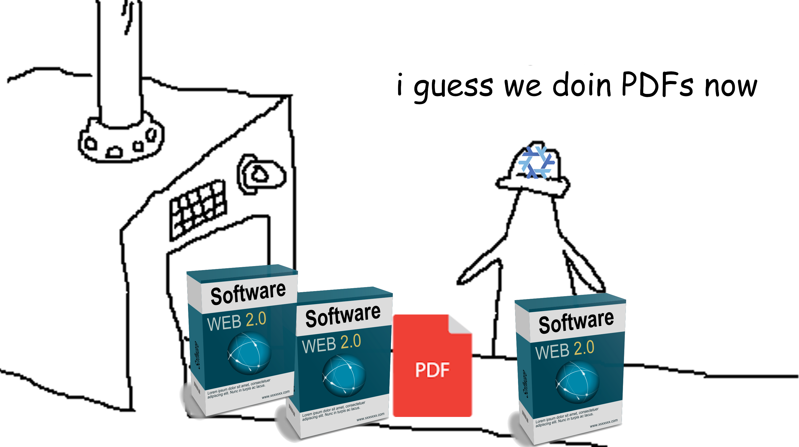

Reproducible data science with Nix, part 12 – Nix as a polyglot build automation tool for data science

Nix is not only a package manager, but also a build automation tool, and you can use it to build polyglot data science pipelines in a completely reproducible way.
For example, suppose that you need to mix Python, R and maybe some others tools for a project (by the way, some believe this will become the norm in the coming years, use your favourite search engine to look for “polyglot data science” and you’ll see), and suppose that you want to define your project as a nice reproducible pipeline, and not simply a series of scripts. What are the options available to you?
One option would be to use the {targets} package for R, which allows you to do lay out your project as pipeline. But as amazing as {targets} is, it only works with R. If you also need Python, you would then need to also use the {reticulate} package to interface with it. But what do you do if you need some other command line tools? Well, you could wrap them in an R function using system() or system2(). But what if you need yet another language, like Julia? There might be a way to call Julia from R, but as you see, the more diverse tools you need, the more complex it gets. And it doesn’t really matter if you switch from {targets} to another such package that exists for, say, Python, you would always need to write wrappers or use packages that allow you to call the other programming languages that you need.
Another possibility is to use good old make. make is a tool from the GNU project that allows you to define targets, which would be the outputs of a script or call to some cli tool by writing so-called Makefiles. For an example of a Makefile in research, take a look at this one from a paper by Grant McDermott. You can use make as a to orchestrate several programming languages or cli tools, but you will need to write code to pass data from one script to the other. {targets} deals with that transparently by serialising all the targets’ outputs using saveRDS() but this only works because only R is supported. But if you’re trying to make R, Python, and whatever else work together, you will need to deal with this manually and find a common interface to pass data around.
Despite this, using make, or some other tool on top of the required programming languages (and not tied to either one), is likely the best solution and it turns out that Nix can be used just like that! But why use Nix and not make then? Well, using Nix guarantees that whatever you produce will be completely reproducible. With make, you would need to either run it inside a Docker image or… inside a development environment built with Nix! I did something similar in this blog post where I ran a {targets} pipeline inside a Nix environment to make the analysis reproducible.
But if I’m already defining a reproducible development environment using Nix, why not go all the way and build a complete project using Nix? After all, Nix allows you to package software and what is software but 0’s and 1’s? And what is a trained model, a paper or report in the PDF format, predictions exported into a CSV file, etc, if not 0’s and 1’s?
Just like with any other build automation tool, Nix will only rebuild the project if something changes, and will only rebuild the parts that need to be rebuilt. So if you change a file somewhere, only whatever depends on this file will get rebuilt, just like with {targets}, or make.
In the following repository you can find an example of this.
This is a very simple project: two functions are defined in the python_functions.py script. These functions are nothing special, and could be used interactively. One function reads a .csv file from the Internet and returns it, the other does some basic cleaning. Here are these two functions included in the python_functions.py file:
from pandas import read_csv
def download_iris(iris_csv_url):
# Read the CSV file
df = read_csv(iris_csv_url)
return df
def process_iris(iris_csv_path):
# Read the CSV file
df = read_csv(iris_csv_path)
# Replace the species numbers with their corresponding names
species_mapping = {0: "setosa", 1: "virginica", 2: "versicolor"}
df['species'] = df['species'].replace(species_mapping)
return df
Then, I want to use {ggplot2} to plot this data. You will notice the lack of R script in the repo. I did this on purpose, because I wanted to show how you could directly write R code inside of a Nix expression. But in practice, it is better to have Python code in a Python script, R code in an R script, and then use Nix to orchestrate the whole thing. But I just wanted to show you that you could, if you wanted to, have a completely self-contained Nix expression that encapsulates the business logic as well.
There’s also a .Qmd file: this is the file that will get compiled into a PDF document, and is the output of the whole project. It could be anything else! As I stated above, this is just 0’s and 1’s so it could very well be some other output, it doesn’t really matter.
Let’s now take a look at the default.nix that builds the whole thing. Let’s start by the top-level definitions:
let
pkgs =
import
(fetchTarball "https://github.com/NixOS/nixpkgs/archive/27285241da3bb285155d549a11192e9fdc3a0d04.tar.gz")
{ };
tex = (
pkgs.texlive.combine {
inherit (pkgs.texlive) scheme-small;
}
);
# Because building happens in sandbox that cannot connect to the internet
# we need to download assets beforehand
iris_path = pkgs.fetchurl {
url = "https://raw.githubusercontent.com/b-rodrigues/nixbat/7c319bcdbe15e7f7182e7685b8de176a40d0bde9/iris.csv";
hash = "sha256-2H6THCXKxIt4yxnDDY+AZRmbxqs7FndCp4MqaAR1Cpw=";
};
# Common python dependencies to use in my intermediary inputs
pythonEnv = pkgs.python312.withPackages (ps: with ps; [ pandas ]);
# Common python sources
python_src = pkgs.lib.fileset.toSource {
root = ./.;
fileset = ./python_functions.py;
};Some variables are defined there:
-
pkgs: this is the set of Nix packages to be used. All the dependencies of the project will get built using the Nix expressions available in thenixpkgsGithub repository at a specific commit. This ensures that the output of this expression will always be exactly the same. -
tex: defines the set of LaTeX packages I need to compile the PDF. -
iris_path: the Python function I use to load the data takes a path, or url, to read the iris dataset. Because building a derivation happens in a sandbox, I need to download assets beforehand. This is what thefetchurlfunction does. I can then refer to the file path using${iris_path}later on. -
pythonEnv: This lists the dependencies I will need to run my Python functions. -
pythonSrc: Defines the path to thepython_functions.pyfile.
Then, I want to call each of my functions separately, and I want them to produce a single output. So for this, I now build a derivation, one per output. I start with the first one:
downloadCsv = pkgs.stdenv.mkDerivation {
name = "download-csv";
buildInputs = [ pythonEnv ];
src = pythonSrc;
buildPhase = ''
python -c "
import pandas as pd
from python_functions import download_iris
iris_raw = download_iris('${iris_path}')
iris_raw.to_csv('iris_raw.csv', index=False)
"
'';
installPhase = ''
mkdir -p $out
cp iris_raw.csv $out/
'';
};At first sight, there might seem that a lot is going on, but let’s take a closer look:
-
first I give it a name:
name = “download-csv” -
second, I list its dependencies in
buildInputs. This is what’s required to build the target! -
then, I provide the source, in this case the
python_functions.pyfile
Then, I need to run the code, and this is what happens in the buildPhase. This is exactly the code you would write if you were using a script to glue your functions together. See how I use ${iris_path} to refer to the path to the file defined above. Finally, in the installPhase I copy the .csv file to $out/, which essentially copies the file into the Nix store, making it available for the next derivations.
In the next derivation, I now use the second Python function to clean the data:
cleanCsv = pkgs.stdenv.mkDerivation {
name = "clean-csv";
buildInputs = [ pythonEnv ];
src = pythonSrc;
buildPhase = ''
python -c "
import pandas as pd
from python_functions import process_iris
iris = process_iris('${downloadCsv}/iris_raw.csv')
iris.to_csv('iris.csv', index=False)
"
'';
installPhase = ''
mkdir -p $out
cp iris.csv $out/
'';
};
This is not very different than what I did before. Just notice how I refer to the output of the first derivation: ${downloadCsv}/iris_raw.csv.
Now comes the last intermediary derivation, the one that uses R to create a plot:
generatePlot = pkgs.stdenv.mkDerivation {
name = "generate-plot";
buildInputs = with pkgs; [
R
rPackages.ggplot2
rPackages.janitor
];
dontUnpack = true;
buildPhase = ''
Rscript -e "
library(ggplot2)
library(janitor)
iris <- read.csv('${cleanCsv}/iris.csv') |>
clean_names() |>
transform(species = as.character(species))
p <- ggplot(iris,
aes(x = sepal_length, y = sepal_width, color = species)) +
geom_point(size = 3) +
labs(title = 'Sepal Length vs Sepal Width',
x = 'Sepal Length',
y = 'Sepal Width') +
theme_minimal() +
theme(plot.title = element_text(hjust = 0.5))
ggsave('plot.png', plot = p, width = 6, height = 4, dpi = 300)
"
'';
installPhase = ''
mkdir -p $out
cp plot.png $out/
'';
};As I said above, to make this better, it would need to be a function defined in its own R script, as this way there’s a nice separation of concerns. On one hand, there’s the business logic in Python and R scripts, and on the other there’s the orchestration in Nix. Putting R code in the Nix expression makes this less flexible, but I wanted to show you that this is also a possibility!
Now comes the last part of the Nix expression, the actual thing I want to build, a PDF that uses the generated plot as an input:
in
# Derivation to generate the PDF report from Markdown
pkgs.stdenv.mkDerivation {
name = "generate-report";
buildInputs = [
pkgs.quarto
tex
];
src = pkgs.lib.fileset.toSource {
root = ./.;
# Only include report.Qmd in the source
fileset = ./report.Qmd;
};
buildPhase = ''
cp ${generatePlot}/plot.png .
# Deno needs to add stuff to $HOME/.cache
# so we give it a home to do this
mkdir home
export HOME=$PWD/home
quarto render report.Qmd --to pdf
'';
installPhase = ''
mkdir -p $out
cp report.pdf $out/
'';
}
Notice the dependencies of this derivation: quarto and tex (tex is the variable I defined right at the beginning that lists LaTeX packages). I then need to specify report.Qmd as the source of this derivation, and copy the plot generated before in R into the working/build directory. There’s also a idiosyncrasy where a dependency of Quarto, Deno, needs to have a directory to save some stuff in it. Nix being Nix, we need to manually define such a home directory for reproducibility purposes. If it would be using my home/ directory on my machine, this wouldn’t be reproducible! We finish the buildPhase by rendering the document, and then install it into $out/. To build this project, you need to have Nix installed and then type nix-build, or alternatively, nix-build -Q which hides all the output of the build phases (so you don’t see any warnings or messages thrown by either Python or R).
This will build the PDF, which you can then find in the Nix store. You’ll notice a file called result appear next to all your other files from the project. In a terminal, call readlink result and this will show you the path to the generated PDF, which you can now read!
In conclusion, I think that this is a really useful way to orchestrate code written in different programming languages, but I would not use this for monolingual projects. For R, I’ll keep using {targets} together with a Nix shell to ensure reproducibility. Also, to really benefit from this, your code needs, ideally, to be written as a series of functions, each outputting a single object. Instead, if you write a script to orchestrate the whole thing in R or Python, and then put a Nix expression on top of it, I’m not sure it’s really worth it. Might as well just use a Nix shell then and execute your scripts in it.
Also, let me state that this is my first attempt at using Nix for such a purpose, and there might be a better/more elegant way of doing it, so if you have any input, don’t hesitate!